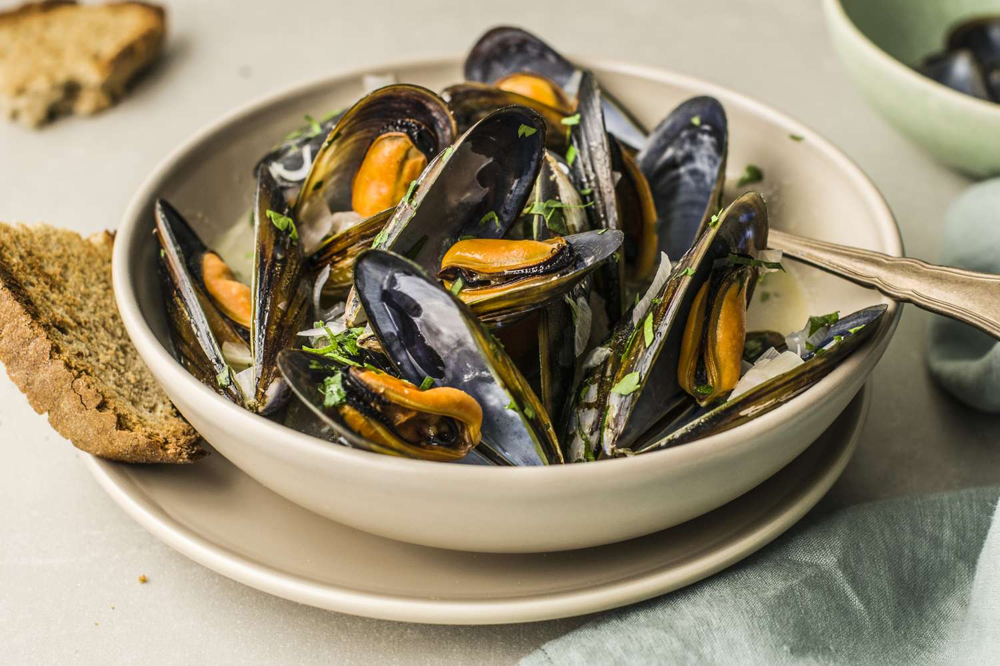

Mussels Recipe with White Wine Garlic Sauce

Description
Tender steamed mussels in a garlic white wine broth are easy to make, healthy, and delicious!
Ingredients
- Extra virgin olive oil
- 4 large garlic cloves, minced
- 1 large shallot or small red onion, halved and thinly sliced
- Kosher salt
- 14g Italian seasoning
- 7g red pepper flakes
- 1kg mussels
- 250ml chicken or vegetable broth
- 125ml dry white wine
- 40g chopped fresh parsley for garnish, optional
To Serve
- 1 lemon, cut into wedges
- 1 French baguette or rustic Italian bread, sliced (optional)
Steps
- Rinse the mussels under cold running water, scrubbing with a brush, until the water runs clear. Discard any mussels that are not fully closed or do not close when you give them a gentle tap with your fingernail.
- In a large Dutch oven or 6-quart cooking pot, heat about 2 to 3 tablespoons of extra virgin olive oil over medium-high heat until shimmering.
- Add the garlic and shallots, and season with a good pinch of kosher salt. Add the Italian seasoning and red pepper flakes (or Aleppo pepper), if using. Cook, stirring frequently with a wooden spoon, until fragrant (manage the heat to make sure the garlic does not brown).
- Add the mussels and stir them around a bit, then pour in the broth and wine. Cover the pot and let the mussels steam over medium-high heat for about 5 to 6 minutes or until the mussels open up (you can give them a quick stir midway through).
- As soon as the mussel shells are open, immediately remove the pot from the heat and stir in the fresh parsley.
- Transfer the mussels and broth to serving bowls and serve immediately with lemon wedges and French or Italian bread to the side.